Anotações de Aula 2 Apresentação Trabalho NP1
Este trabalho substitui a primeira prova (NP1) do primeiro bimestre de 2025.
Este trabalho levará o aluno a fazer um estudo de mercado para obter financiamento de um investidor para montar uma EMPRESA/CONSULTORIA DE IMPLANTAÇÃO DE ERPs de terceiros.
Dinâmica: o trabalho será desenvolvido em grupo de até 4 alunos (o grupo simulará uma startup).
O trabalho deve ser entregue impresso em tamanho A4, uma cópia por aluno (como se fosse individual).
O trabalho deverá ter no mínimo 5 e no máximo 10 folhas.
2.1 NP1 – TRABALHO DE SUBSTITUIÇÃO DE PROVA P1 - PESQUISA
2.1.1 1- CAPA
UNIP – UNIVERSIDADE PAULISTA
CURSO: TECNOLOGIA EM ANÁLISE E DESENVOLVIMENTO DE SISTEMAS
DISCIPLINA – TIC – TECNOLOGIA DA INFORMAÇÃO E TELECOMUNICAÇÃO
TÍTULO: PLANO Captação de Investimento para empresa “CONSULTORIA E IMPLANTAÇÃO ERP+ COMERCIO ELETRÔNICO” - GRUPO número “x” [onde x é definido pelo professor]
- NOME: Integrante 1 NOME: Integrante 2 NOME: Integrante 3 NOME: Integrante 4
PROFESSOR: Miguel Suez Xve Penteado
2.1.4 4- Resumo:
“ESTE ESTUDO DO GRUPO X PROVOU QUE UMA EMPRESA DO RAMO DE CONSULTORIA E IMPLANTAÇÃO DE SOLUÇÃO ERP + COMERCIO ELETRÔNICO É VIAVEL, SEGUNDO LEVANTAMENTO DAS PESQUISAS X,Y,Z DO(S) ORGÃO(S) X(Y,Z)”
2.1.5 5-Justificativa:
“ UMA VEZ COMPROVADA A DEMANDA POR IMPLANTAÇÃO DE SOFTWARE TIC ERP E CRM + SCM (REPRESENTADAS SUAS FUNCIONALIDADES NO E-COMERCE), JUSTIFICA-SE O INVESTIMENTO EM STARTUPs DESTA NAUTREZA”
2.1.6 6-Objetivo:
LEVANTAR OS DADOS QUE PROVAM AO INVESTIDOR QUE COMPENSA INVESTIR EM UMA STARTUP DE IMPLANTAÇÃO DE Sis ERP+E-COMERCE.
2.1.7 7 – introdução
SOMOS O GRUPO X, NOSSO GRUPO IMPLANTA ERPs INTEGRADOS A COMERCIO ELETRÔNICO. MAS O QUE VEM A SER UM ERP ? [EXPLICA O QUE É UM ERP SEGUNDO NOSSOS LIVROS TEXTO]. E O QUE É COMERCIO ELETRÔNICO ? [EXPLICA]. QUAL A VANTAGEM COMPETITIVA DE UMA EMPRESA QUE TEM ESSES SI(s) ? [EXPLICA E PODE USAR OS NOSSOS LIVROS-TEXTO COMO REFERÊNCIA]
2.1.8 8- Revisão Bibliográfica:
“EMPRESAS DE CONSULTORIA EM TIC PARA IMPLANTAÇÃO DE SISTEMAS TIPO ERP E COMERCIO ELETRÔNICO DÃO LUCRO EM 2025. SEGUNDO AS ÚLTIMAS PESQUISAS …. FOI COMPROVADO A NECESSIDADE DA POPULAÇÃO EM TAL TIPO DE SOFTWARE, E POR CONSEQUÊNCIA, EMPRESAS QUE IMPLANTAM ESSE TIPO DE SOFTWARE DÃO LUCRO…”
Segundo A PESQUISA 1 – TANTAS EMPRESAS SE INFORMATIZARAM NOS ULTIMOS 5 ANOS.., SEGUNDO A PESQUISA 2, TANTAS PESSOAS COMPRARAM DA INTERNET NOS ULTIMOS 5 ANOS. SEGUNDO A PESQUISA 3, HÁ TANTAS PESSOAS BUSCANDO ENSINO A DISTÂNCIA
2.1.10 10-Resultados
PODEMOS CONCLUIR O CONHECIMENTO1 DE QUE … A PARTIR DA INFORMAÇÃO1;
PODEMOS CONCLUIR O CONHECIMENTO2 DE QUE … A PARTIR DA INFORMAÇÃO2;
PODEMOS CONCLUIR O CONHECIMENTO3 DE QUE … A PARTIR DA INFORMAÇÃO3;
2.1.11 11- Discussão
O CONHECIMENTO1 JUSTIFICA O INVESTIMENTO NA NOSSA STARTUP DO GRUPO X, QUE IMPLANTA Sis ERP+COMÉRCIO ELETRÔNICO;
O CONHECIMENTO2 JUSTIFICA O INVESTIMENTO NA NOSSA STARTUP DO GRUPO X, QUE IMPLANTA Sis ERP+COMÉRCIO ELETRÔNICO;
2.1.12 12-Conclusão
POR ISSO TUDO, OU SEJA CONHECIMENTO1, CONHECIMENTO2, CONHECIMENTO3… COMPROVAMOS QUE COMPENSA O IVESTIMENTO NA EMPRESA DO GRUPO X. CONVIDO VOCÊ A SER NOSSO SÓCIO;
2.1.14 Apendice - links de pesquisas de TIC no Brasil
| Pesquisa do CETIC - NIC.br | Endereço |
|---|---|
| TIC – DOMICÍLIOS | https://cetic.br/pesquisa/domicilios/ |
| TIC – EMPRESAS | https://cetic.br/pt/pesquisa/empresas/ |
| TIC – EDUCAÇÃO | https://cetic.br/pt/pesquisa/educacao/ |
| TIC – SAÚDE | https://cetic.br/pt/pesquisa/saude/ |
| TIC – ORGANIZAÇÕES SEM FINS LUCRATIVOS | https://cetic.br/pt/pesquisa/osfil/ |
| TIC – GOVERNO ELETRÔNICO | https://cetic.br/pt/pesquisa/governo-eletronico/ |
| Pesquisa do IBGE | Endereço |
|---|---|
| IBGE – PESQUISA TIC – EMPRESA – 2010 | https://www.ibge.gov.br/estatisticas/multidominio/ciencia-tecnologia-e-inovacao/9137-pesquisa-sobre-o-uso-das-tecnologias-de-informacao-e-comunicacao-nas-empresas.html?=&t=o-que-e |
| IBGE – PESQUISA PINTEC – INOVAÇÃO TECNOLÓGICA | https://www.ibge.gov.br/estatisticas/multidominio/ciencia-tecnologia-e-inovacao/9141-pesquisa-de-inovacao.html |
| IBGE - PSTI – PESQUISA DE SERVIÇOS DE TIC – MODALIDADE SEMESTRAL | https://www.ibge.gov.br/estatisticas/multidominio/ciencia-tecnologia-e-inovacao/9037-pesquisa-de-servicos-de-tecnologia-da-informacao.html?=&t=o-que-e |
LEMBRANDO QUE:
Dados são sequências de fatos ainda não analisados, antes de serem organizados e ar ranjados de um jeito que as pessoas possam compreendê-los.
Informação é um dado organizado e apresentado de forma útil.
Conhecimento é o resultado da aplicação da informação para tomada de decisão.
Regras:
1- O trabalho deve ter no mínmo 5 e no máximo 10 PÁGINAS (se trata de páginas e não de laudas);
2- Plágio causa penalidade de nota igual a zero;
3- Data da entrega final deste trabalho: DATA DA NP1;
2.2 Formação dos Grupos
O professor está criando as tabelas de grupos conforme a disposição que os alunos passaram e postará aqui.
2.3 Parte Prática - Implantar um E-commerce atrelado a um ERP
Estudo de Caso:
Suponha que você tem uma empresa (consultoria) de implantação de ERP com e-commerce.
Neste exemplo, o nome de sua empresa (consultoria) é DATALEVE.
Suponha que sua Empresa de Implantação de ERP acabou de ganhar um cliente.
O nome do seu cliente é Anderson Silva.
Anderson Silva gostaria de vender camisetas da com estampa da sua marca pessoal poe e-commerce.
Ele contratou sua consultoria para implantar o ERP que irá vender as camisetas via e-commerce.
2.3.1 Ter em posse os dados do cliente:
| Nome do Cliente | |
| CPF do Cliente | |
| RG do cliente | |
| Endereço do Cliente | |
| Telefone do Cliente | |
| e-mail do cliente |
Caso seja empresa (pessoa jurídica), peça mais essas informações
| CNPJ do sócio administrador | |
| Inscrição Estadual da loja | |
| Inscrição Municipal da Loja |
2.4 Começando a Impantação do ERP
O ERP escolhido para este estudo de caso é um ERP tipo SAAS (Software como serviço), ou seja, um software ERP WEB. A solução ERP escolhida neste estudo de caso foi o ERP BLING https://www.bling.com.br/. A solução de e-commerce escolhida neste estudo de caso para integrar a funcionalidade de e-commerce com o ERP anterior foi a https://www.nuvemshop.com.br/.
Ambas soluções oferecem planos gratuítos onde o aluno pode estudar o caso simulando um ambiente real.
2.4.1 Impantando o ERP
Destaca-se que neste ambiente de simulação, não vamos explorar a parte de controle FISCAL dos ERPs. Desta forma: - Não vamos cadastrar certificados de pessoa jurídica (CNCP digital); - Portanto não vamos emitir nenhum tipo de nota fiscal; - E, portanto, não vamos cadastrar meios de pagamento eletrônicos no e-commerce;
2.4.1.1 Iniciar castrando seu cliente na solução ERP
Comece inserindo os dados do seu cliente no ERP


 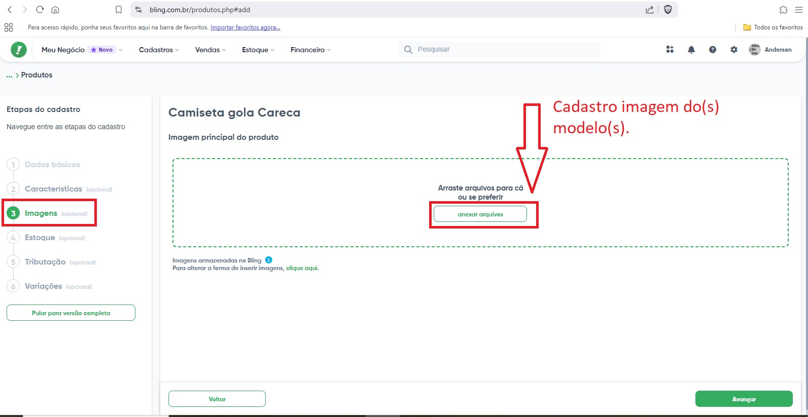
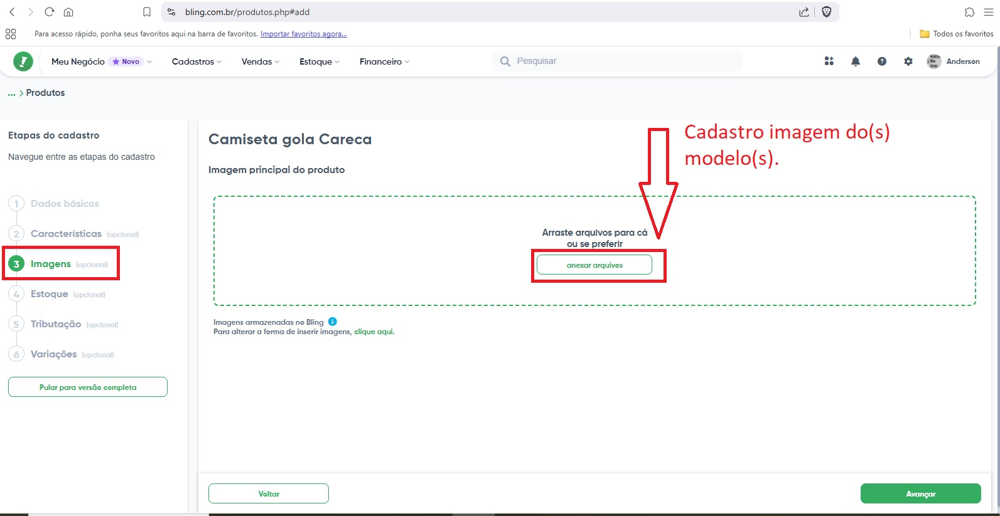 


 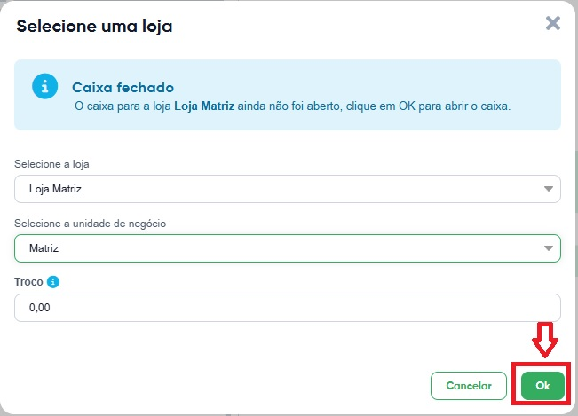
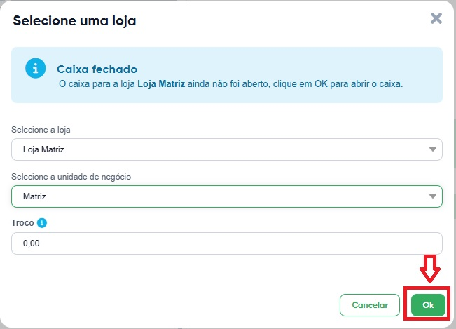 
 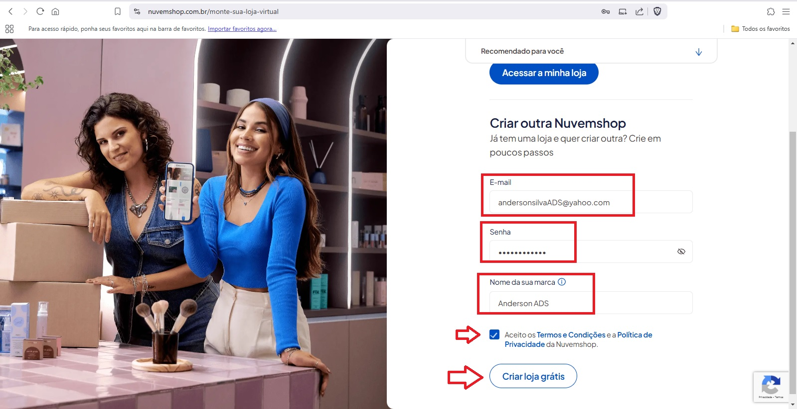
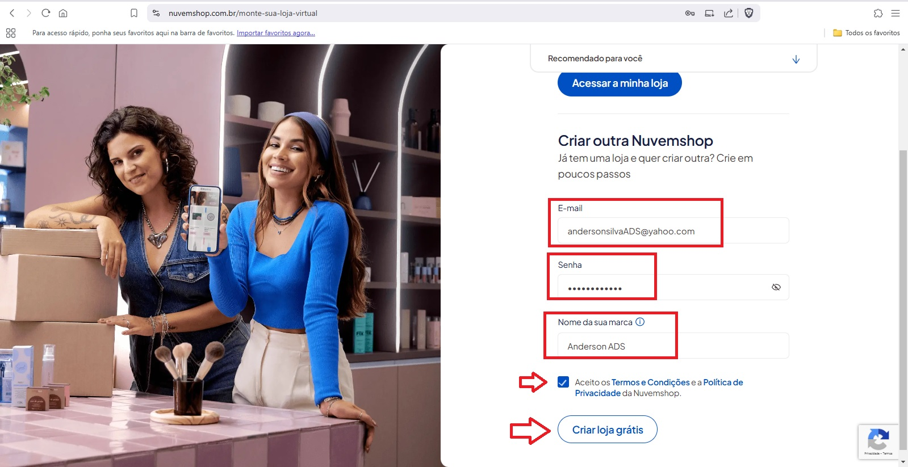 


 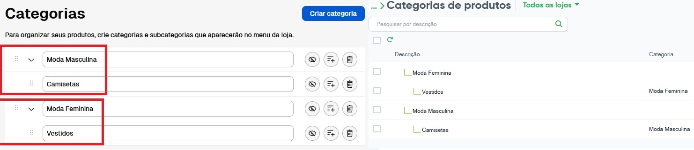
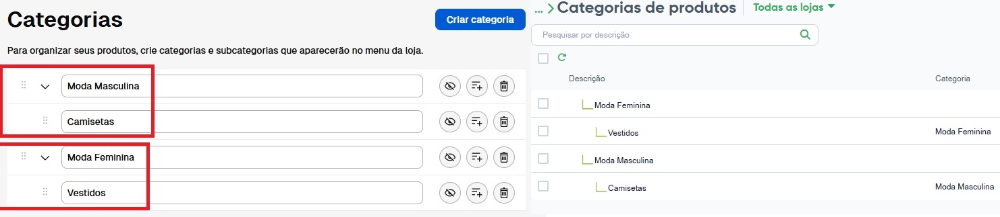


 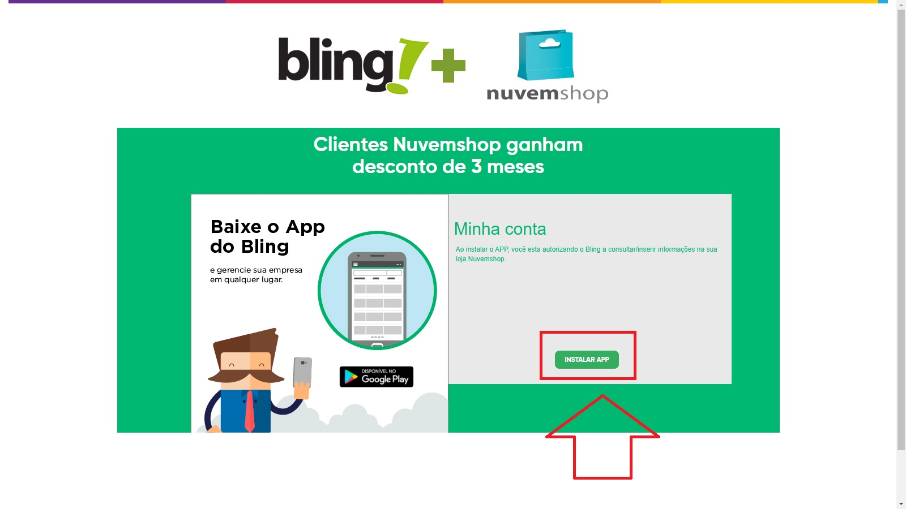
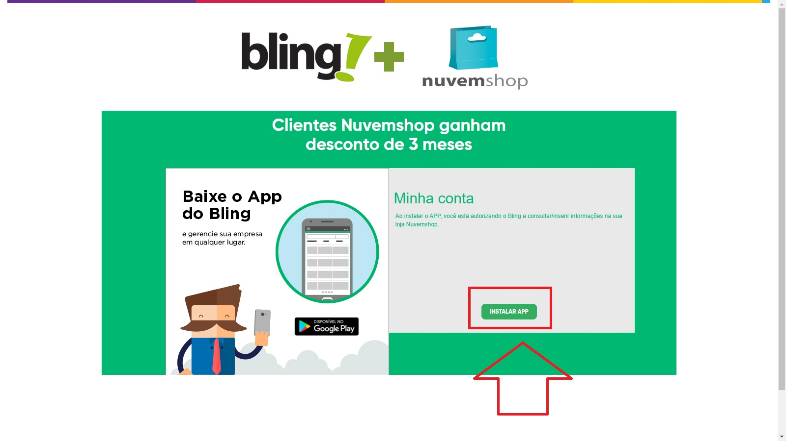


 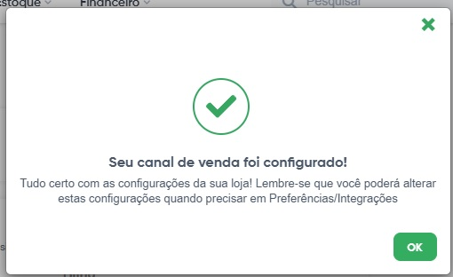
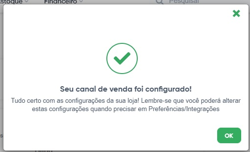


 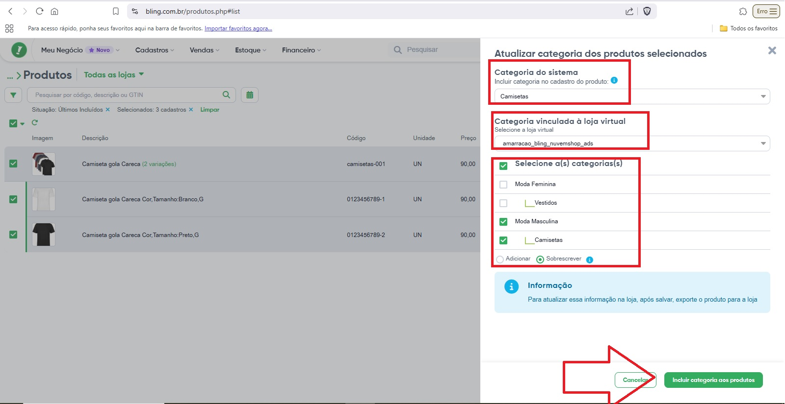 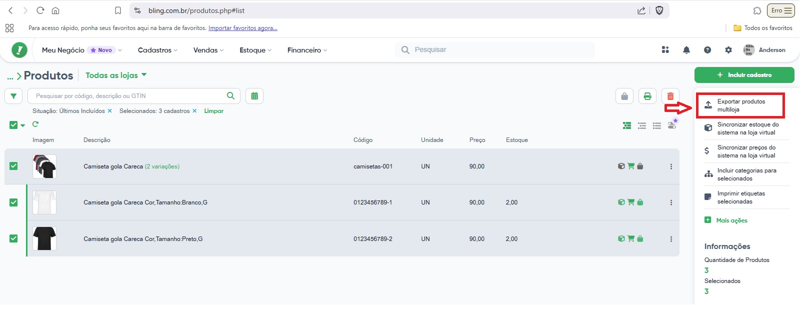 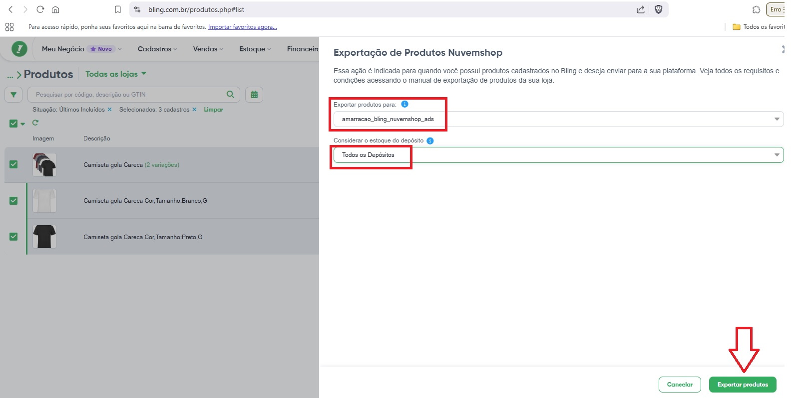
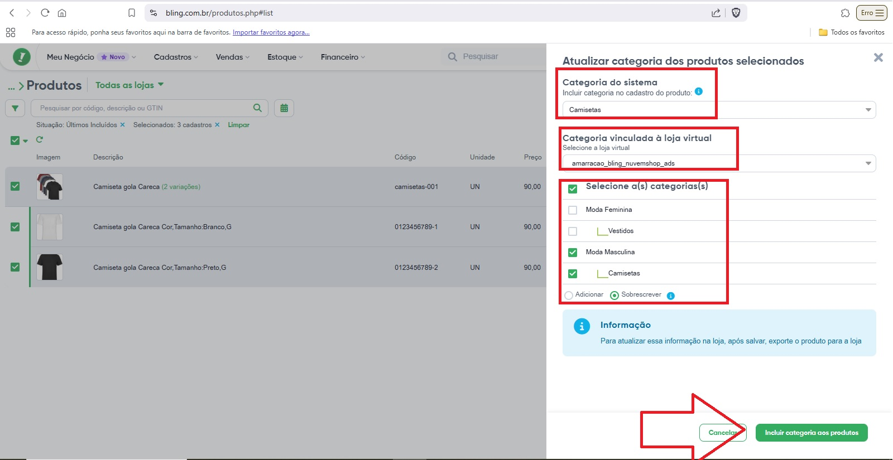 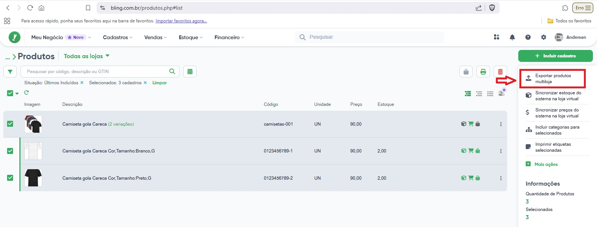 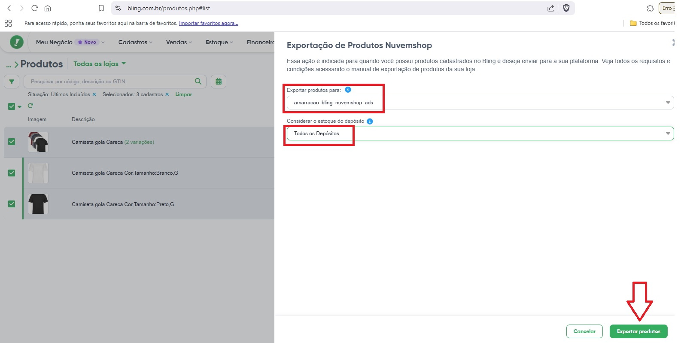